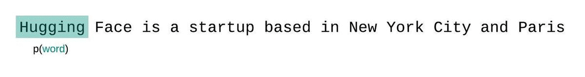

Introduction
The perplexity is a widely used evaluation metric in natural language processing (NLP) that measures how well a auto-regressive/causal language model predicts a sample text. It is not well defined for masked language models.
Defition of perplexity of discrete probability distribution
In information theory, perplexity is a measure of uncertainty in the value of a sample from a discrete probability distribution. The larger the perplexity, the less likely it is that an observer can guess the value which will be drawn from the distribution. The perplexity $PP$ of a discrete probability distribution $p$ is defined as
$$
PP(p) := b^{H(p)} = b^{-\sum_{x}{p(x)}log_{b}p(x)}
= \prod_{x}p(x)^{-p(x)}
$$
where $H(p)$ is the entropy in bits of the distribution, and $x$ ranges over the events. The perplexity is independent of the base $b$, the $b$ is customarily 2 but doesn’t need not be 2, while the entropy and the exponentiation use the same base should be enough.
Evaluating probability model using perplexity
Many time probability distribution $p$ is unknown, and one may propose an probability model $q$ based on samples that were drawn from $p$, we may evaluate $q$ by asking how well it predicts a separate test samples $x_1$, $x_2$, …, $x_n$ also drawn from $p$. The perplexity of the model $q$ is defined as
$$
PP(p) :=
b^{-\frac{1}{N}\sum_{i=1}^{N}{log_{b}q(x_i)}}
$$
Calcuting of perplexity of a tokenized sequence
Given a tokenized sequence $X=(x_1,\dots,x_t)$ and an casual language model $Q_\theta$, the probability $P$ of the sequence can be defined as
$$
\begin{split}
P(X;Q_\theta) &:= Q_{\theta}(x_1)
Q_{\theta}(x_2 \mid x_1) \dots Q_{\theta}(x_t \mid x_{< t})\\\\
&=
\prod_{i=1}^{t} Q_{\theta}(x_i \mid x_{< i})
\end{split}
$$
where $Q_\theta(x_i \mid x_{< i})$ is the probability assigns to the i-th token conditioned on the preceding tokens $x_{< i}$ according to our model
It would be nice to compare the probabilities assigned to different sentences to see which sentences are better predicted by the language model. However, since the probability of a sentence is obtained from a product of probabilities, the longer is the sentence the lower will be its probability (since it’s a product of factors with values smaller thanone). We should find a way of measuring these sentence probabilities, without the influence of the sentence length. This can be done by normalizing the sentence probability by the number of words in the sentence. Since the probability of a sentence is obtained by multiplying many factors, we can average them using the geometric mean. So the normalized probability of the tokenized sequence is then
$$
P_{\text{nomalized}}(X;Q_\theta) :=
\sqrt[t]{\prod_{i=1}^{t} Q_{\theta}(x_i \mid x_{< i})}
$$
The perplexity is just the reciprocal of this expression
$$
\begin{split}
PP(X;Q_\theta) &:=
\frac{1}{P_{\text{nomalized}}(X;Q_\theta)}\\\\
&=
\frac{1}{\sqrt[t]{\prod_{i=1}^{t} Q_{\theta}(x_i \mid x_{<
i})}}\\\\
&= (\prod_{i=1}^{t} Q_{\theta}(x_i \mid
x_{< i}))^{-\frac{1}{t}}\\\\
&= b^{-\frac{1}{t}
\sum_{i=1}^{t}{\log_{b}{Q_\theta(x_i \mid x_{< i})}}}
\end{split}
$$
We have the same equation as perplexity for probability model, a language model is nothing more than a probability model trained over tokenized sequences. Since the tokenization procedure has a direct impact on a model’s perplexity which should always be taken into consideration when comparing different models.
The perplexity is convenient for casual language model with decoder-only transformer architure evaluation because usually cross entropy loss function is used in which the negative log-likelihood is already computed during the inference process. The model inference will calculate the negative log-likelihood conditional to context of all target token you pass in a single forward calculation. Using $e$ as $b$, the calculation can be simplied to
$$
PP(X;Q_\theta) := e^{\frac{1}{t}\boldsymbol{1_{n}} \cdot
\mathcal{L(X;\theta)}}
$$
where $\boldsymbol{1_{n}}$ is $\begin{bmatrix} 1,\dots,1 \end{bmatrix} \in \mathcal{R^t}$ and $\mathcal{L(X;Q_\theta)}$ is the output of LLM model in which $\mathcal{L(X;Q_\theta)} = \begin{bmatrix} -\log{Q_\theta(x_1)}\\\\ \vdots\\\\ -\log{Q_\theta(x_t \mid x_{< t})}\\\\ \end{bmatrix}$
We typically have a constraint on the number of tokens the model can process. The largest version of GPT-2, for example, has a fixed length of 1024 tokens, so we cannot calculate $Q_\theta(x_t \mid x{< t})$ directly when $t$ is greater than 1024.
One approach to solve this problem is break the sequence into disjoint subsequences equal to the model’s maximum input size and add up the decomposed perplexity of each subsequence independently.

This is quick to compute since the perplexity of each segment can be computed in one forward pass, but serves as a poor approximation of the fully-factorized perplexity and will typically yield a higher (worse) perplexity because the model will have less context at most of the prediction steps.
Instead, the perplexity of fixed-length models should be evaluated with a sliding-window strategy. This involves repeatedly sliding the context window so that the model has more context when making each prediction.

This is a closer approximation to the true decomposition of the sequence probability and will typically yield a more favorable score. The downside is that it requires a separate forward pass for each token in the corpus. A good practical compromise is to employ a strided sliding window, moving the context by larger strides rather than sliding by 1 token a time. This allows computation to proceed much faster while still giving the model a large context to make predictions at each step.
Reference
- Wikipedia - Perplexity
- Article One: Two minutes NLP — Perplexity explained with simple probabilities
- Perplexity of fixed-length models
- HuggingFace Evaluation Metric: perplexity
- Evaluation Metrics for Language Modeling